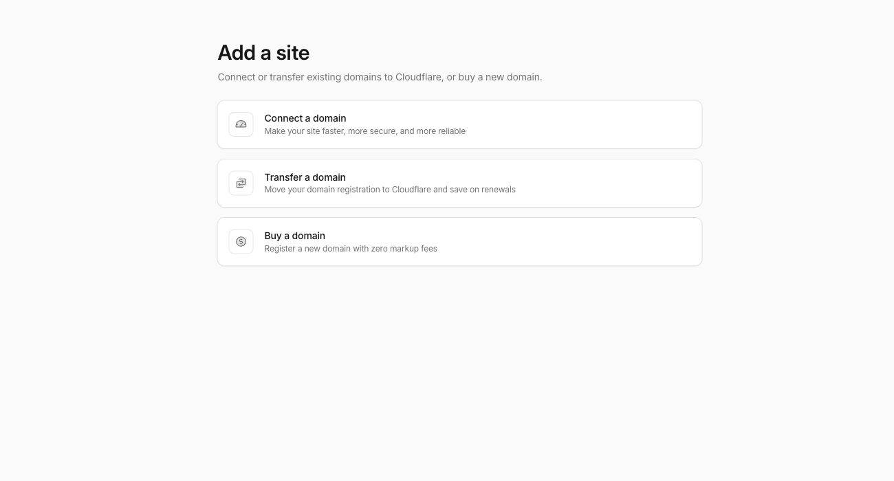
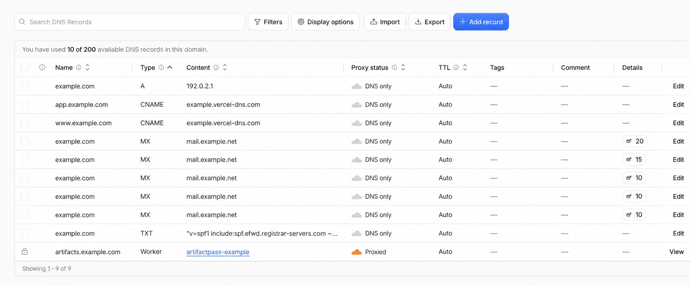
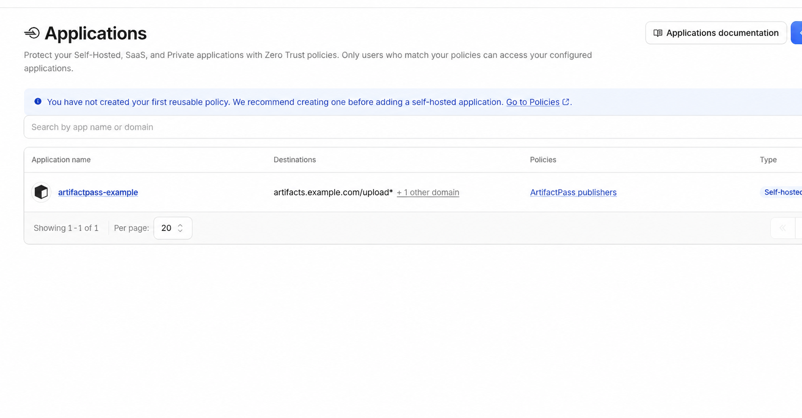
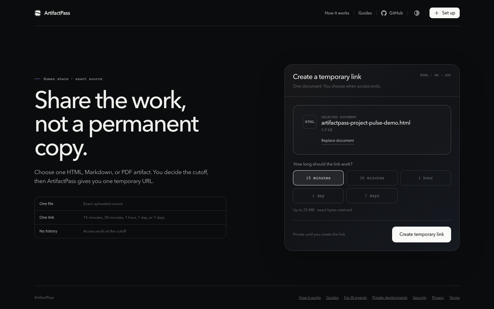

Cloudflare must manage the domain's DNS, but the domain registration stays with your current registrar. You do not have to transfer the domain to Cloudflare.
Keep the deployment in your Cloudflare account
ArtifactPass creates a Worker for the app, an R2 bucket for files, a D1 database for temporary metadata and access state, and a Cloudflare Access application for publisher sign-in. The viewer runs on your private hostname.
The public ArtifactPass landing page, privacy policy, terms, and general guides remain on artifactpass.com. A customer deployment receives the actual sharing application, not a copied marketing site.
Connect the domain to Cloudflare DNS
This is the most important distinction in the setup: connecting a domain to Cloudflare does not mean transferring the registration to Cloudflare Registrar.
The domain can remain registered with the current registrar. Cloudflare asks you to add the DNS zone, reviews the existing records it found, and assigns two authoritative nameservers. You replace the current nameservers at the registrar with the Cloudflare pair.

Before changing nameservers
- Compare Cloudflare's imported DNS records with the current provider.
- Preserve website records such as the apex A or CNAME and the
wwwrecord. - Preserve email records, including MX, SPF, DKIM, and DMARC.
- Add any uncommon subdomains the automatic scan missed.
- Do not delete working origin records simply because ArtifactPass will use a subdomain.

After the nameserver change propagates, Cloudflare marks the zone Active. ArtifactPass waits for that state before it plans the application hostname.
Run the deployment wizard
Start from a trusted project folder with Node.js 24 or newer and pnpm available.
pnpm dlx artifactpass deploy --new
The CLI prints the Cloudflare authorization link as well as attempting to open it. That lets you choose the correct browser profile when more than one Cloudflare account is signed in.
Cloudflare shows the requested permissions before approval. The deployment needs enough authority to create and update the Worker, D1 database, R2 storage, route or custom hostname, and Access configuration. It also reads account and zone information needed to build the plan.
When the wizard asks for the domain, enter only the bare domain:
example.com
Do not enter https://example.com. Later, the wizard proposes a deployment hostname such as artifacts.example.com.
Choose who may publish
The private viewer and publishing application use different trust rules. Publishing is authenticated through Cloudflare Access. A live artifact URL remains a bearer link that anyone holding it can read until expiry.
The wizard supports two publisher models:
Approved company email domains
Use this when everyone with an address at a controlled company domain may publish. Enter the email domain, not a website URL. For example, use example.com.
Specific email addresses
Use this for a small team, a group of collaborators, or an operator who does not have a company email domain. Include the administrator's own email address in the allow list. Cloudflare Access evaluates the same list for the admin and every teammate.

ArtifactPass does not send invitation emails. After deployment, send approved teammates the private hostname and the project setup command.
pnpm dlx artifactpass --base-url https://artifacts.example.com
Review, deploy, and operate it
Before deployment, ArtifactPass prints a review of the hostname, Cloudflare account, domain, sign-in method, publisher rules, link lifetimes, storage, metadata, and placement. Every editable item can be revisited before approval.
A successful deployment prints the private URL, teammate setup command, update command, and a local receipt. Keep that receipt. It lets the CLI resume and inspect the deployment without guessing which Cloudflare resources belong together.
Private deployments are version-pinned. They do not change when a new ArtifactPass package is published. Update deliberately by resuming the hostname with the current CLI:
pnpm dlx artifactpass deploy --resume artifacts.example.com
The update reuses the hostname, Access application, D1 database, R2 bucket, and stored artifacts. It reviews the plan, applies required migrations, and redeploys the Worker.

Common questions
Do I have to move my domain registration to Cloudflare?
No. The registration can remain with its current registrar. You connect the DNS zone by changing the authoritative nameservers.
Can I use a domain that already has a website and email?
Yes. Preserve the existing DNS records during the Cloudflare import. ArtifactPass uses a dedicated hostname such as artifacts.example.com.
Does adding someone to Access send an invitation?
No. Share the private URL and setup command separately. The allow rule controls whether Cloudflare Access completes sign-in.
Can I edit the allow list later?
Yes. Resume the deployment and edit publisher access during review, or manage the corresponding Access policy in Cloudflare with care.